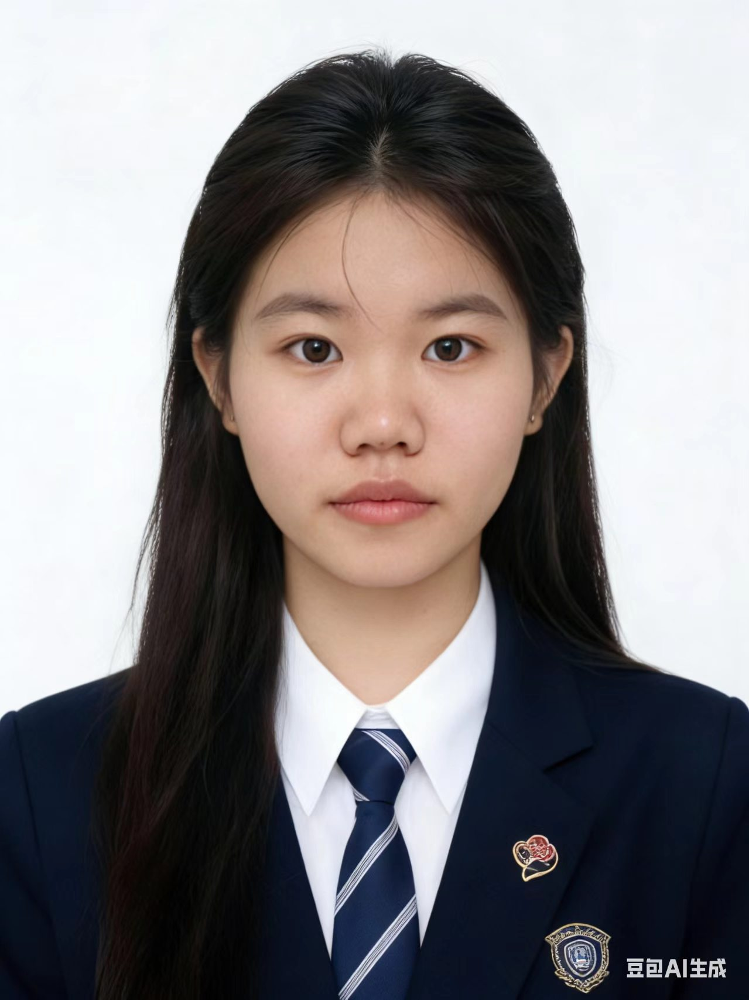
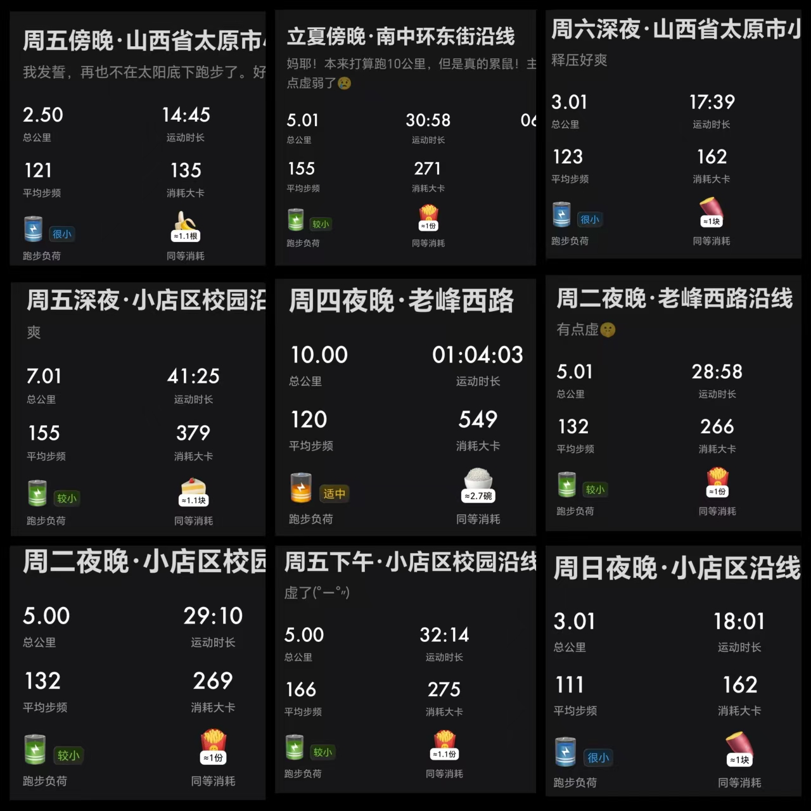
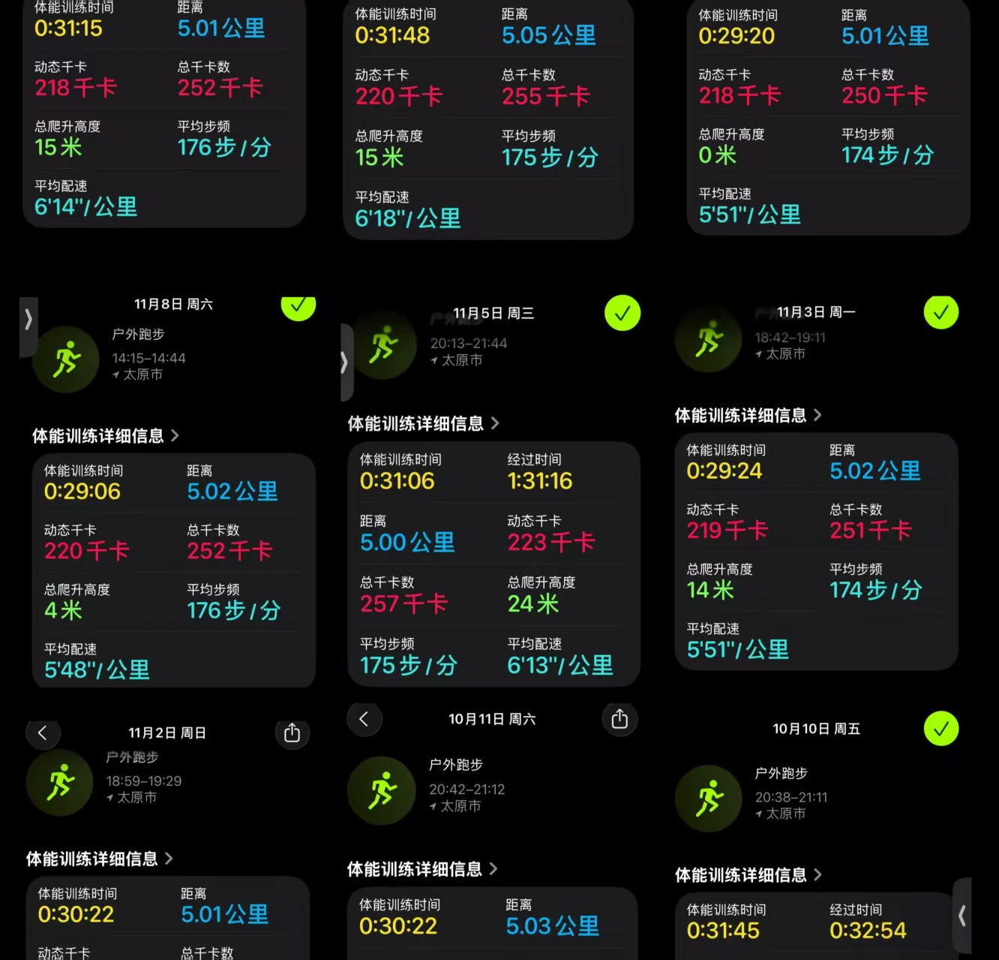
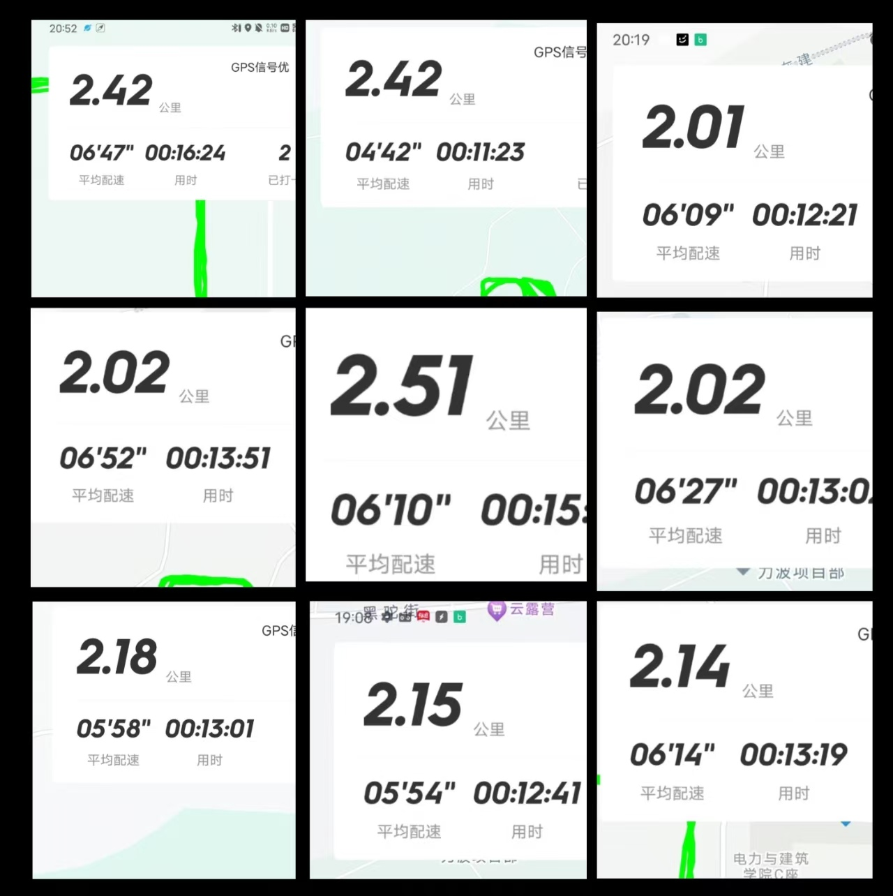

健身房卫生管理小程序
校园健身房卫生管理，从0到1落地双端产品
"C端用户不是付费方，产品必须先打动B端"
项目背景
发现"卫生差→体验差→更不爱护"恶性循环，切入B端付费+C端反馈闭环的商业模式。
我的工作
- 痛点挖掘：核心不是"用户素质低"，而是"反馈渠道缺失"
- 方案设计：匿名扫码反馈→工单制→进度透明闭环
- 双端架构：B端管理后台 + C端轻量入口
- 0-1全流程落地

拥有工科逻辑的 AI 产品创作者，致力于用技术解决真实的效能问题。
能把需求变成可落地的产品方案
知道什么时候该叫停比闷头做更难
能从用户聊天中提炼出可行动的洞察
校园健身房卫生管理，从0到1落地双端产品
发现"卫生差→体验差→更不爱护"恶性循环，切入B端付费+C端反馈闭环的商业模式。
主动终止的项目，比做完更有价值
探索AI+用药管理方向，发现用户与载体根本错位后及时叫停，避免资源浪费。
10人深度访谈，修正"兴趣驱动"假设
帮二三本大学生从兴趣出发探索职业，通过用户研究修正了初始假设。
每周三次规律跑步，3km→5km→7km逐步突破。从大一到大二，跑步已经成了我生活的一部分。它教会我的不只是体能，更是目标拆解与持续迭代的思维方式。



如果你对产品感兴趣，或者想聊聊，欢迎联系我